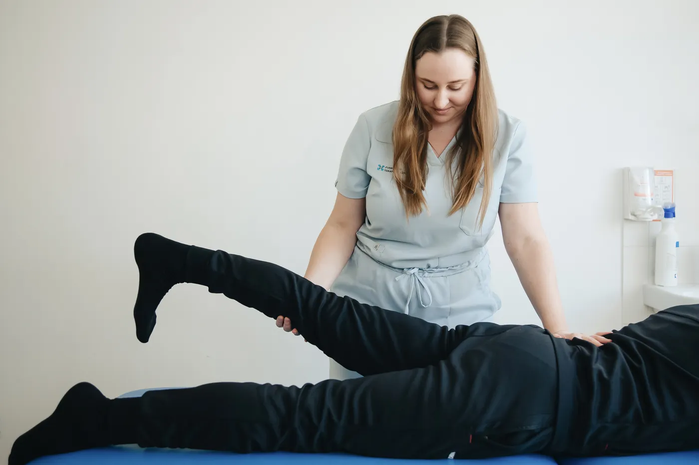
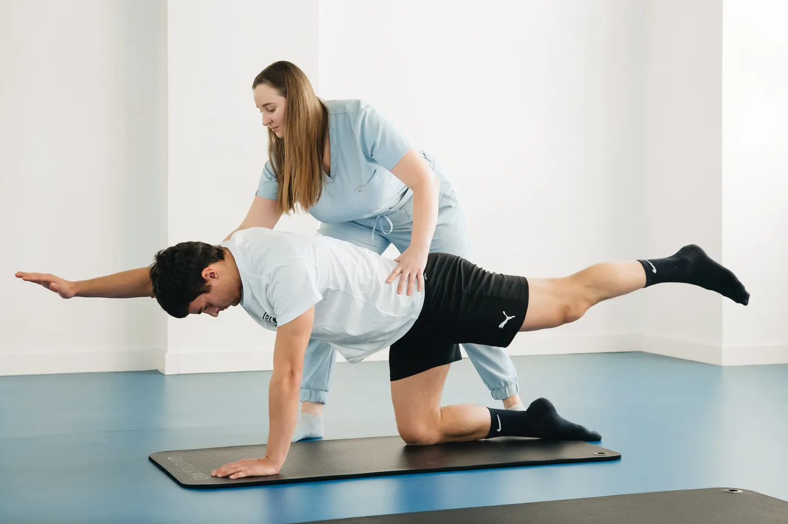

כאבי גב וצוואר
הקלה בכאב, שיפור היציבה וחיזוק מדורג שמאפשר לחזור לשגרה בביטחון.
בדיקת התאמהטיפול מקצועי, קשוב ומדויק בכאב, בפציעות ובמגבלות תנועה — עם תכנית שמותאמת לחיים שלך, לא רק לאבחנה.
איך אוכל לעזור?
לא צריך ללמוד לחיות עם הכאב. יחד נבין מה מגביל אותך, נבנה תכנית ברורה ונחזיר לגוף ביטחון, כוח וחופש.
הקלה בכאב, שיפור היציבה וחיזוק מדורג שמאפשר לחזור לשגרה בביטחון.
בדיקת התאמהאבחון תנועתי, טיפול וחזרה חכמה ומדורגת לריצה, לאימון ולמגרש.
בדיקת התאמהליווי לפני ואחרי ניתוח, שיקום מפרקים ושיפור טווחי תנועה ותפקוד.
בדיקת התאמהטיפול דיסקרטי ורגיש בהריון, אחרי לידה ובקשיים בתפקוד רצפת האגן.
בדיקת התאמה
נעים להכיר
אני מאמינה שטיפול טוב מתחיל בלהבין את האדם שמולי — את היום־יום, המטרות והחששות — ורק אחר כך את הכאב.
בעלת תואר B.P.T בפיזיותרפיה והכשרות מתקדמות בטיפול אורתופדי, פציעות ספורט ושיקום רצפת האגן. בקליניקה אני משלבת טיפול ידני, תרגול תנועתי והדרכה פשוטה שאפשר ליישם בבית.
התהליך שלנו
תהליך שקוף, ממוקד ונעים — כדי שתמיד יהיה ברור מה עושים ולמה.

נבין מה מפריע לך, מה חשוב לך להשיג ואם הטיפול מתאים.
בדיקה מקצועית של תנועה, כוח, טווחים והרגלי היום־יום.
טיפול ידני ותרגול מדויק, עם יעדים ברורים ומעקב לאורך הדרך.
נבנה עצמאות וכלים שישמרו על ההתקדמות גם אחרי הטיפול.
מטופלים מספרים
השינוי האמיתי נמדד ברגעים הקטנים: לעלות מדרגות בלי לחשוש, להרים את הילד, לצאת שוב לריצה.
“אחרי חודשים של כאבי גב חזרתי להתאמן בלי פחד. נועה הסבירה כל שלב ונתנה לי תחושה שיש דרך ברורה קדימה.”
“הגעתי אחרי ניתוח ברך, והיחס היה מקצועי ומדויק מהרגע הראשון. היום אני שוב רוכב ועולה מדרגות בלי כאב.”
“טיפול רגיש, מכבד ומאוד פרקטי אחרי הלידה. הרגשתי שמקשיבים לי באמת ושכל תרגיל מותאם בדיוק אליי.”
טיפול שמתאים לחיים כאן
התרגול שלך לא נשאר בין ארבעה קירות. המטרה היא לאפשר לך ללכת, לרוץ, לעבוד, לטייל ולחיות בגוף שמרגיש שוב שלך.
מתחילים מכאןשאלות נפוצות
לא מצאת כאן תשובה? אפשר להשאיר הודעה ואחזור אליך בהקדם.
שליחת שאלהברוב המקרים אין צורך בהפניה כדי להתחיל טיפול פרטי. אם יש בדיקות או מסמכים רפואיים רלוונטיים, כדאי להביא אותם לפגישה הראשונה.
פגישה ראשונה נמשכת כ־60 דקות וכוללת תשאול ואבחון. טיפולי המשך נמשכים כ־45 דקות.
מספר הטיפולים משתנה לפי סוג הבעיה, משך הכאב והמטרות שלך. לאחר האבחון נגדיר יחד הערכה ותכנית ברורה.
מבוטחים רבים זכאים להחזר דרך ביטוחים פרטיים. בסיום הטיפול תקבלו חשבונית מסודרת להגשה לחברת הביטוח.
בגדים נוחים שמאפשרים תנועה, בדיקות הדמיה או מסמכים רלוונטיים, ורשימה קצרה של הדברים שהיית רוצה לחזור לעשות.
הצעד הראשון
השאירו פרטים לשיחת היכרות קצרה. נבדוק יחד מה נכון עבורך ונמצא זמן שמתאים.